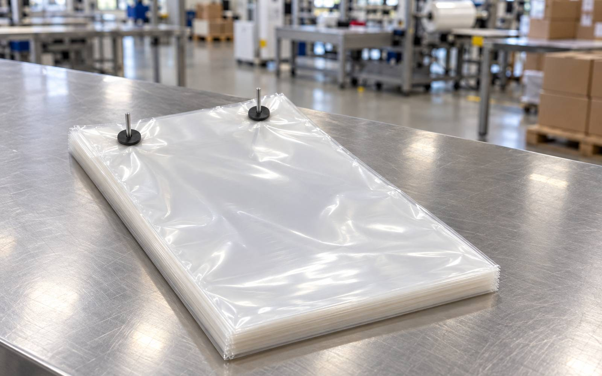
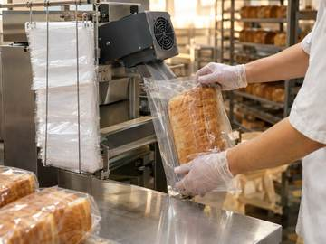
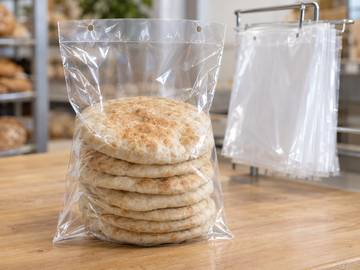
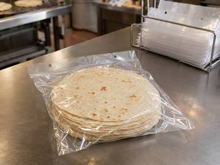
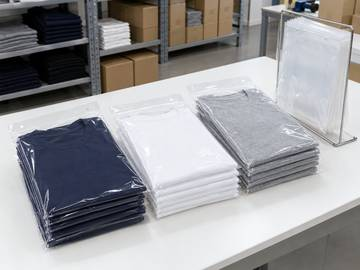
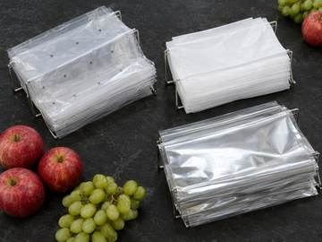
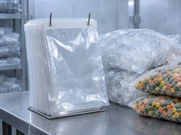
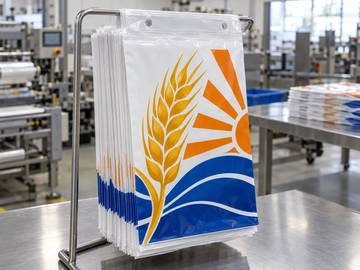

Custom & printed wicketed bags
Wicketed bags, done right.
Custom wicketed poly bags, printed or plain, stacked on wire wickets and ready for your bagging line. Made to your spec, in house.

- 60+years making bags
- In houseprint, convert, zippers
- 3–4 wktypical lead time
- 8-colorflexo printing
01 · The bag
What are wicketed bags?
A wicketed bag has two small holes in its lip. The bags are stacked on a wire wicket through those holes, so each one pulls off clean and fast.
They run on high-speed automatic bagging machines, semi-automatic bag openers, or by hand. You'll also hear them called wicket bags or wicketed poly bags.
Match my current bag →02 · In motion
How wicketed bags are made.
A wicketer seals and cuts each bag, then stacks it onto the wire wicket, ready for your line.
Video: Hudson-Sharp 5750W wicketer, from the Hudson-Sharp YouTube channel. Not our factory.
03 · Options
Build your custom wicketed bag.
Vent holes
Let produce and bread breathe.
Gussets
Side or bottom, for more room.
Lip & flap
Sized to your wicket and machine.
Header
Clean top for hanging or branding.
Up to 8-color print
Flexo printing, or plain. Printed wicketed bags →
Films
Clear, white, metallized. PE & PP. Anti-slip film too.
Zippers
Added in house.
Coatings
Anti-Fog, UV Resistant, Cold Seal, Anti-Static.
Food contact
FDA-compliant films.
Made to spec
Size, gauge, wicket, hole spacing.
04 · Industries
Wicketed bags for your line.
Bread, pita and tortillas, produce, frozen food and ice, T-shirts and apparel. Pick yours.

Bakery bags
Bread bags that pull off the wicket clean on automatic and semi-auto baggers.

Pita bags
Clear or printed bags for pita and flatbread, gusseted or flat, resealable if you want.

Tortilla bags
Wicketed bags for corn and flour tortillas: clear, printed or resealable.

Shirt & apparel bags
Shirt and garment bags for uniform companies and apparel brands. Anti-slip film keeps stacks put.

Produce bags
Vented bags for fruit and vegetables, with Anti-Fog to keep produce in view.

Frozen food & ice bags
Printed or plain wicketed bags for frozen foods and packaged ice.

Printed wicketed bags
Custom printed wicketed poly bags, up to 8-color flexo, printed and converted in house.
Also for candy & snacks, retail & hardware and industrial parts. Ask us →
05 · Why us
Made in Brooklyn. Start to finish.
- 60+ yearsof making flexible packaging.
- Everything in houseWe print, convert and add zippers under one roof.
- 3–4 week lead timeTypical, from approval to done.
- Up to 8 colorsFlexo printing on clear, white or metallized film.
06 · Order
Get a quote.
- Tell us your bag. Size, film, print and your machine or wicket.
- Get your quote. Straight numbers, no runaround.
- We make it. Typical lead time 3–4 weeks.
Prefer email? quote@wicketedbags.com
07 · FAQ
Wicketed bag questions.
What are wicketed bags?
Poly bags with two small holes in the lip, stacked on a wire wicket. Each bag pulls off clean, so they load fast on automatic bagging machines, semi-automatic bag openers, or by hand.
What's the difference between wicket bags and wicketed bags?
Nothing. Wicket bags, wicketed bags and wicketed poly bags are names for the same thing: bags stacked on a wire wicket for fast loading.
What sizes do you make?
Made to your spec: bag size, gauge, wicket size and hole spacing. Send us your current bag or your machine's specs and we'll match it.
What's the minimum order?
It depends on size, film and print. Ask us and we'll give you a straight answer with your quote.
How long does it take?
Typical lead time is 3–4 weeks. Everything is made in house in Brooklyn, NY.
Do you make printed wicketed poly bags?
Yes. Custom printed wicketed poly bags, flexo printed up to 8 colors on clear, white or metallized PE and PP film, then converted in house.
What industries use wicketed bags?
Bakeries, pita and tortilla makers, produce packers, frozen food and ice, apparel and T-shirt companies, candy and snacks, retail, hardware and industrial parts.
Can you print my logo on wicketed bags?
Yes. Flexo printing up to 8 colors, or plain bags with no print.
What films can I choose?
Clear, white and metallized films, in PE and PP. Add coatings like Anti-Fog, UV Resistant, Cold Seal or Anti-Static.
Are your bags food safe?
We use FDA-compliant films for food contact: bread, produce, frozen food, ice, candy and snacks.
Can you add vent holes, gussets or a header?
Yes: vent holes, gussets, a lip or flap, a header, and zippers added in house.